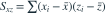

真实固定设计模型为 ，。若仅用截距与 x 回归，斜率估计的期望为？记 ，

。- A

- B
- C
- D
我已思考，展开答案与解析
正确答案：D
- 遗漏 z 后的斜率为 。
- 代入真实模型并取期望，截距与误差项消失，留下 。
易错提醒是否存在偏差取决于被遗漏效应与设计变量相关性，不能只看误差均值为零。
JYSG · 432精选 · 册内北京师范大学432·2025年·5(2)；PDF第63页（印刷页61）
原大题拆解

。JYSG · 432精选 · 册内北京师范大学432·2025年·5(2)；PDF第63页（印刷页61）
原大题拆解